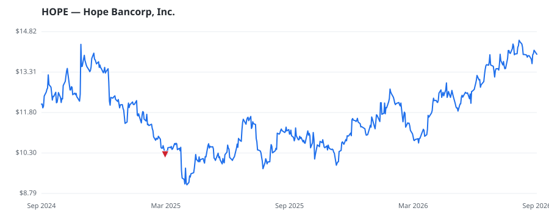

bullish · bearish · n/a — dots: price>SMA10 · SMA10>SMA50 · SMA50>SMA200 · up>down volume (20d)
Banks · small cap

Hope Bancorp Inc is a bank holding company engaged in providing financial services. It offers core business banking products for small and medium-sized businesses and individuals. Services offered by the bank include online banking, mobile banking, mortgage loans, credit cards, investment and wealth management services, and other banking services. NATIONAL COMMERCIAL BANKS · website
| Revenue | $941.2M | Net income | $61.6M |
|---|---|---|---|
| Operating income | $77.3M | Diluted EPS | $0.49 |
| Assets | $18.5B | Equity | $2.3B |